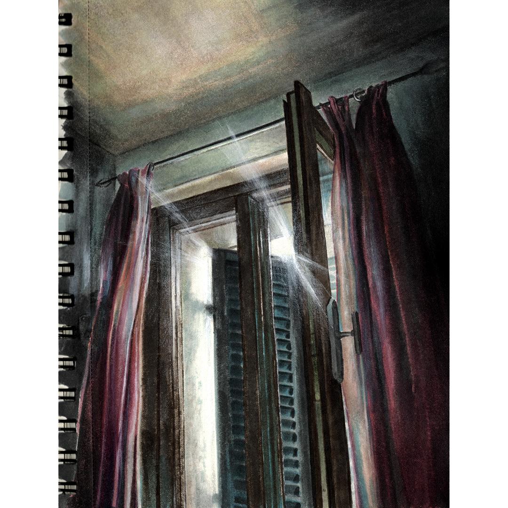

очередной потолок
l'ennesimo soffitto
another ceiling

очередной потолок
еще один год, что потратил на поиск,
себя или душу свою не сберёг,
не веришь - спроси всех друзей и знакомых.
и проклятый рок,
что веет трясиной в парадных притонов,
тебя приведет, как и ровно всегда,
лишь к поиску страхов, сидящих под кожей.
ещё один год,
где я снова продрог
от ветра, несущего груз изменений.
очередной год, по дороге домой,
и снова ты ищешь свой вектор в прохожих.
ещё один бог, что заменит тебя,
ведь главное здесь не запоминать лица.
очередной год, где себя не сберёг
ведь самое ценное скинул у входа
в ту самую дверь
что вела к потолку,
который ты вряд ли когда-то забудешь
тепло, как и свет,
что тянул каждый день,
заменит неряшливо призрак в прихожей.
l'ennesimo soffitto
un altro anno sprecato nella ricerca,
non ho custodito me stesso né la mia anima,
se non ci credi - chiedi pure ad amici e conoscenti.
e quel destino maledetto,
che traspira aria di palude negli androni dei bassifondi,
ti porterà, come sempre,
solo a cercare le paure che siedono sotto la pelle.
un altro anno,
in cui sono di nuovo assiderato
dal vento che porta il peso dei cambiamenti.
l'ennesimo anno, sulla strada verso casa,
e cerchi ancora il tuo vettore nei passanti.
un altro dio, che ti sostituirà,
perché il punto qui non è memorizzare i volti.
l'ennesimo anno in cui non mi sono salvato,
perché la cosa più preziosa l'ho lasciata
sulla soglia della porta
che conduce a quel soffitto quasi impossibile da dimenticare.
il calore, così come la luce che trainava ogni giorno,
saranno rimpiazzati con noncuranza da uno spettro nell'ingresso.
another ceiling
another year wasted on the search,
I shielded neither body nor soul,
if you doubt it - ask friends, ask any witness.
and that cursed fate,
reeking of swamp air in the stairwells of the slums,
will lead you, just as always,
only to seek out the fears lodged beneath the skin.
another year, where I am numbed again
by the wind bearing the burden of change.
another year, on the way home,
and again you seek your vector in passersby.
another god to replace you,
for there is no point in remembering faces.
another year I didn't save myself,
because I left the most precious thing
on the threshold of the door
that leads to that ceiling impossible to forget.
the warmth, just like the light that dragged on every day,
will be carelessly replaced by a ghost in the hallway.